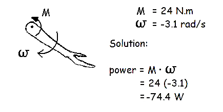

Introduction to Mechanical Power
Power can be defined as the rate of doing work or the rate of change of energy. It is a kinetic variable that is very useful in the mechanics of human movement.
Average Power

The
reason that
this quantity is called average power is that work is not an
instantaneous value. It requires a finite period of time over which the
work was done. Average power is a useful measure in the human movement
sciences because many sports require work to be done as quickly as
possible.
Example: How much arm power is required for a 70 kg person to climb an 8 meter rope in 20 seconds?

For many human performance activities, the ability to do work in the shortest period of time is paramount. Aerobic power is often measured as an important determinant of performance in endurance events and Anaerobic power is important for activities lasting between 30 seconds and a few minutes.
Instantaneous Power
Another way of measuring power is to multiply force and velocity or to use calculus to get the rate of change of energy.

In the previous lecture on energy, we saw that the energy of a limb segment can be calculated at each instant in time. We can use these measures to calculate segment power using the central finite difference method of differentiation that we learned in the laboratory section.
We will use the example of calculating the power of a thigh segment at frame 60 of a video analysis using the data from frames 59 and 61.

Muscle power can be calculated as the product of the net joint moment of force and the segment angular velocity.
This next examples shows the calculation of the instantaneous power of the elbow flexors.

A negative muscle power indicates an eccentric contraction. Notice that the flexor muscles are active but the elbow is extending .